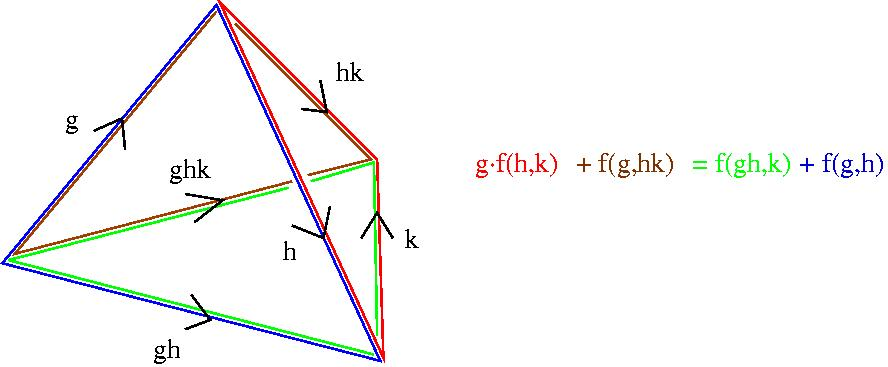

|
|||
|---|---|---|---|
| Given
a ZG-resolution R and a ZG-module A, one defines an n-cocycle to be a ZG-homomorphism
f:Rn → A for which the composite homomorphism fdn+1:Rn+1→A
is zero. If R happens to be the standard bar resolution (i.e. the
cellular chain complex of the nerve of the group G considered as a one
object category) then the free ZG-generators of Rn are
indexed by n-tuples (g1 | g2 | ... | gn)
of elements gi in G. In this case we say that the n-cocycle
is a standard n-cocycle and
we think of it as a set-theoretic function f : G × G × ...
× G → A
satisfying a certain algebraic
cocycle
condition.
Bearing in mind that a standard n-cocycle really just assigns an element f(g1, ... ,gn) of A to an n-simplex in the nerve of G, the cocycle condition is a very natural one which states that "f must vanish on the boundary of a certain (n+1)-simplex". For n=2 the condition is that a 2-cocycle f(g1,g2) must satisfy g.f(h,k) + f(g,hk) = f(gh,k) + f(g,h) for all g,h,k in G. This equation is explained by the following picture. 
The definition of a cocycle clearly depends on the choice of ZG-resolution R. However, the cohomology group Hn(G,A), which is a group of equivalence classes of n-cocycles, is independent of the choice of R. There are some occasions when one needs explicit examples of standard cocycles. For instance:
|
|||
| Given
a ZG-resolution R (with contracting homotopy) and a ZG-module A one can
use HAP commands to compute explicit standard n-cocycles f:Gn
→ A. With the twisted quantum double in mind, we illustrate the
computation for n=3, G=S3, and A=U(1)
the group of complex numbers of modulus 1 with trivial G-action. We first compute a ZG-resolution R. The Universal Coefficient Theorem gives an isomorphism H3(G,U(1)) = HomZ(H3(G,Z), U(1)), The multiplicative group U(1) can thus be viewed as Zm where m is a multiple of the exponent of H3(G,Z). |
|||
| gap>
G:=SymmetricGroup(3);; gap> R:=ResolutionFiniteGroup(G,4);; gap> TR:=TensorWithIntegers(R);; gap> Homology(TR,3); [ 6 ] gap> R.dimension(3); 4 gap> R.dimension(4); 5 |
|||
| We
thus replace the very infinite group U(1) by the finite cyclic group Z6.
Since the resolution R has 4 generators in degree 3, a homomorphism f:R3→U(1)
can be represented by a list f=[f1, f2, f3,
f4]
with fi is the image in Z6 of the ith
generator. The cocycle condition on f can
be expressed as a matrix equation Mf = 0 modulo 6
where the matrix M is got from the following command. |
|||
| gap>
M:=CocycleCondition(R,3);; |
|||
| A
particular cocycle f=[f1, f2, f3, f4]
can be got by
choosing a solution to the equation Mf=0. |
|||
| gap>
SolutionsMod2:=NullspaceModQ(TransposedMat(M),2); [ [ 0, 0, 0, 0 ], [ 0, 0, 1, 1 ], [ 1, 1, 0, 0 ], [ 1, 1, 1, 1 ] ] gap> SolutionsMod3:=NullspaceModQ(TransposedMat(M),3); [ [ 0, 0, 0, 0 ], [ 0, 0, 0, 1 ], [ 0, 0, 0, 2 ], [ 0, 0, 1, 0 ], [ 0, 0, 1, 1 ], [ 0, 0, 1, 2 ], [ 0, 0, 2, 0 ], [ 0, 0, 2, 1 ], [ 0, 0, 2, 2 ] ] |
|||
| A
non-standard 3-cocycle f can be converted to a standard one using the
command StandardCocycle(R,f,n,q)
. This command inputs R, integers n and q, and an n-cocycle f for the
resolution R. It returns a standard cocycle Gn → Zq. |
|||
| gap>
f:=3*SolutionsMod2[3] -
SolutionsMod3[5];
#An example solution to Mf=0 mod 6. [ 3, 3, -1, -1 ] gap> Standard_f:=StandardCocycle(R,f,3,6);; gap> g:=Random(G); h:=Random(G); k:=Random(G); (1,2) (1,3,2) (1,3) gap> Standard_f(g,h,k); 3 |
|||
| A
function f: G×G×G → A is a standard 3-cocycle if and only
if g·f(h,k,l) -
f(gh,k,l) + f(g,hk,l) - f(g,h,kl) + f(g,h,k) = 0
for all g,h,k,l in G. In the above
example the group G=S3
acts trivially on A=Z6. The following commands show that the
standard 3-cocycle produced in the example really does satisfy this
3-cocycle condition.
|
|||
| gap>
sf:=Standard_f;; gap> Test:=function(g,h,k,l); > return sf(h,k,l) - sf(g*h,k,l) + sf(g,h*k,l) - sf(g,h,k*l) + sf(g,h,k); > end; function( g, h, k, l ) ... end gap> for g in G do for h in G do for k in G do for l in G do > Print(Test(g,h,k,l),","); > od;od;od;od; 0,0,0,0,0,0,0,0,0,0,0,0,0,0,0,0,0,0,0,0,0,0,0,0,0,0,0,0,0,0,0,0,0,0,0,0,0,0, 0,0,0,0,0,0,0,0,0,0,0,0,0,0,0,0,0,0,0,0,0,0,0,0,0,0,0,0,0,0,0,0,0,0,0,0,0,0, 0,0,0,0,0,0,0,0,0,0,0,0,0,0,0,0,0,0,0,0,0,0,0,0,0,0,0,0,0,0,0,0,0,0,0,0,0,0, 0,0,0,0,0,0,0,0,0,0,0,0,0,0,0,0,0,0,0,0,0,0,0,0,0,0,0,0,0,0,0,0,0,0,0,0,0,0, 0,0,0,0,0,0,0,0,0,0,0,0,0,0,0,0,0,0,0,0,0,0,0,0,0,0,0,0,0,0,0,0,0,0,0,0,0,0, 0,0,0,0,0,0,0,0,0,0,0,0,0,0,0,0,0,0,0,0,0,0,0,0,0,0,0,0,0,0,0,0,0,0,0,0,0,0, 0,0,0,0,0,0,0,0,0,0,0,0,0,0,0,0,0,0,0,0,0,0,0,0,0,0,0,0,0,0,0,6,0,6,6,0,0,6, 0,0,0,0,0,6,6,6,0,6,0,12,12,6,12,6,0,12,6,0,6,6,0,0,0,0,0,0,0,12,12,6,6,6,0, 6,6,0,6,6,0,0,-6,0,0,0,0,0,0,0,0,0,0,6,6,6,6,6,0,0,0,0,0,0,0,6,0,0,6,6,0,6,6, 0,6,0,0,6,6,6,0,0,0,0,0,0,0,-6,0,0,-6,0,-6,0,0,0,0,0,0,0,0,6,6,0,6,0,0,6,0,0, 0,0,0,6,6,6,0,0,0,6,6,6,0,0,0,0,-6,0,6,6,0,0,0,0,0,0,0,12,6,6,0,6,0,0,0,0,12, 6,0,0,0,0,0,0,0,6,6,0,0,0,0,0,0,0,0,0,0,0,0,0,0,0,0,0,0,0,0,0,0,0,0,0,0,0,0, 0,0,0,0,0,0,0,0,0,0,0,0,0,0,0,0,0,0,0,0,0,0,0,0,6,0,0,6,0,0,6,0,0,0,0,0,6,6, 6,0,0,0,6,12,6,6,0,0,0,-6,0,0,6,0,0,0,0,0,0,0,12,12,6,6,6,0,0,0,0,6,6,0,0,0, 0,0,0,0,0,0,0,0,0,0,0,0,0,0,0,0,0,0,0,0,0,0,0,0,0,0,6,0,0,6,0,6,0,0,0,0,0,0, 0,0,0,0,0,0,0,0,0,0,0,0,0,0,0,0,0,0,0,0,0,0,0,0,0,0,0,0,0,0,0,0,6,6,6,6,6,0, 6,6,0,6,6,0,12,12,6,12,12,0,0,0,0,0,0,0,6,6,0,0,0,0,6,6,6,12,12,0,-6,-6,0,0, 0,0,6,6,0,0,6,0,0,6,0,6,6,0,0,0,0,0,0,0,0,0,0,0,0,0,0,0,0,0,0,0,0,0,0,0,0,0, 0,0,0,0,0,0,0,0,0,0,0,0,0,0,0,0,0,0,6,0,6,0,0,0,0,0,0,0,0,0,0,0,0,0,0,0,6,6, 0,6,0,0,6,0,0,0,0,0,0,0,0,0,0,0,6,6,0,6,0,0,6,0,0,0,0,0,0,0,0,0,0,0,0,0,6,0, 0,0,0,0,0,0,0,0,0,0,0,0,0,0,6,0,0,6,6,0,6,6,0,6,0,0,6,6,6,0,0,0,0,0,0,0,0,0, 0,0,0,0,0,0,0,0,0,0,0,0,0,6,0,0,0,0,0,0,0,0,0,0,0,0,0,0,0,0,0,0,0,0,0,0,0,0, 0,6,6,0,0,0,0,0,0,0,0,0,0,0,0,0,0,0,0,6,6,0,0,0,0,0,0,0,6,6,0,0,0,0,0,0,0,0, 0,0,0,0,0,0,0,0,0,0,0,0,0,0,0,0,0,0,0,0,0,0,0,0,0,0,0,0,0,0,0,0,0,0,0,0,0,0, 0,0,0,0,0,0,0,0,0,0,-6,0,6,0,6,0,6,0,0,0,0,0,0,0,12,12,6,12,12,0,6,6,0,6,6,0, 0,0,0,0,0,0,12,12,6,12,12,0,6,6,0,6,6,0,0,0,0,0,0,0,0,0,0,0,0,0,6,6,6,6,6,0, 0,0,0,0,0,0,6,0,0,6,6,0,6,6,0,6,0,0,6,6,6,0,0,0,-6,0,0,0,-6,0,0,-6,0,-6,0,0, 0,0,0,0,0,0,0,0,0,0,0,0,0,0,0,0,0,0,6,6,6,6,6,0,6,6,0,0,0,0,0,0,0,6,6,0,0,0, 0,0,0,0,6,6,0,-6,0,0,-6,0,0,12,6,0,-6,-6,0,0,0,0,6,6,0,0,6,0,0,6,0,6,6,0,0,0, 0,0,0,0,0,0,0,0,0,0,0,0,0,0,0,0,0,0,0,0,0,0,0,0,0,0,0,0,0,0,0,0,0,0,0,0,0,0, 0,0,0,-6,0,0,0,0,0,0,0,0,0,0,6,6,6,6,6,0,6,12,0,6,0,0,6,0,0,0,6,0,0,0,0,0,0, 0,6,12,0,0,0,0,0,0,0,6,6,0,-6,-6,0,0,0,0,0,0,0,0,6,0,0,6,0,6,6,0,0,0,0,0,0,0, 6,0,0,0,6,0,0,6,0,6,0,0,0,0,0,0,0,0,0,0,0,0,0,0,0,0,0,0,0,0,0,0,0,0,0,0,0,6, 0,0,0,0,0,0,0,0,6,0,0,0,0,0,0,0,6,6,0,6,6,0,6,6,6,12,12,0,0,0,0,0,0,0,6,6,0, 6,6,0,6,6,6,12,12,0,0,0,0,0,0,0,6,6,0,0,6,0,0,6,0,6,6, |
|||
|